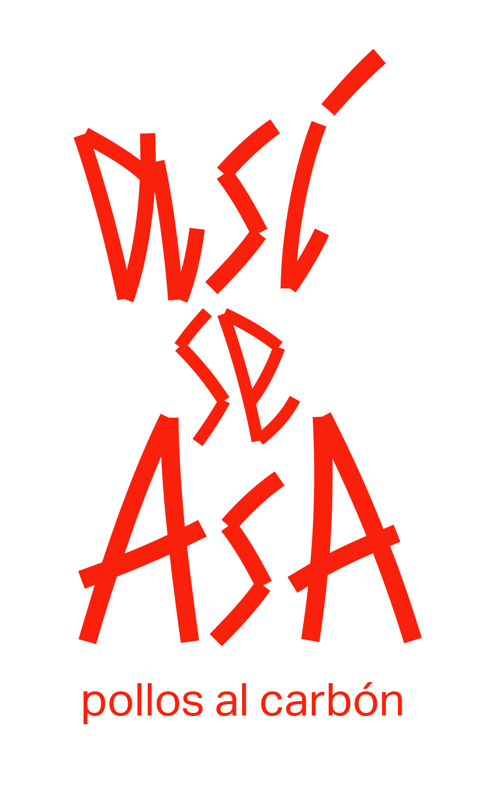
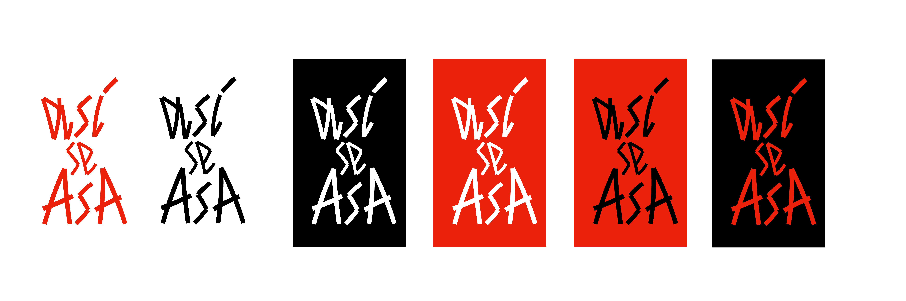

así se asa
visual identity
Logo redesign for a takeaway restaurant specializing in charcoal-grilled chicken, located in Calle Alcalá, a Madrid neighborhood known for its trendy atmosphere and young crowd.
The brand wanted the identity to convey the warmth and intensity of fire and glowing embers, with red playing a central role in the visual language to reinforce the feeling of flame, energy, and unique flavor.

